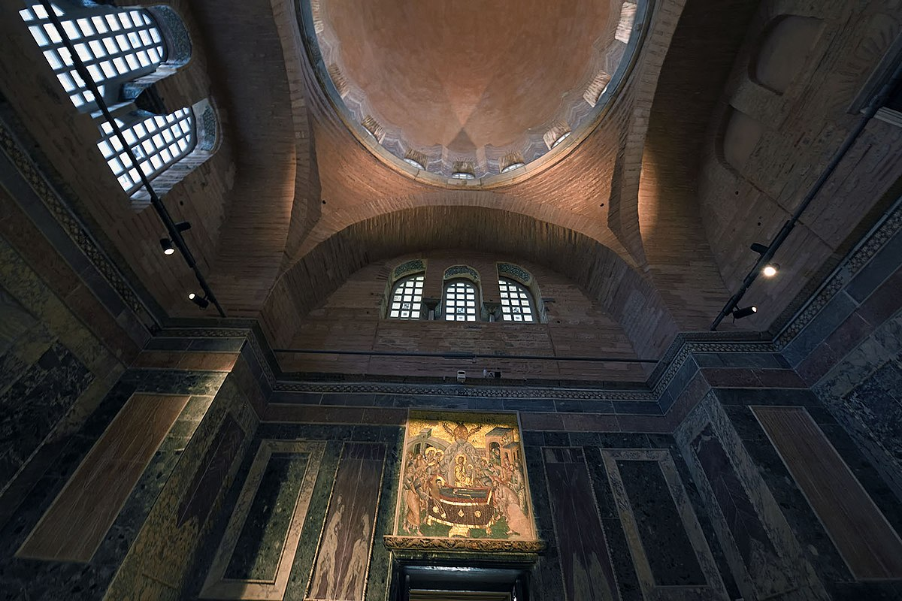
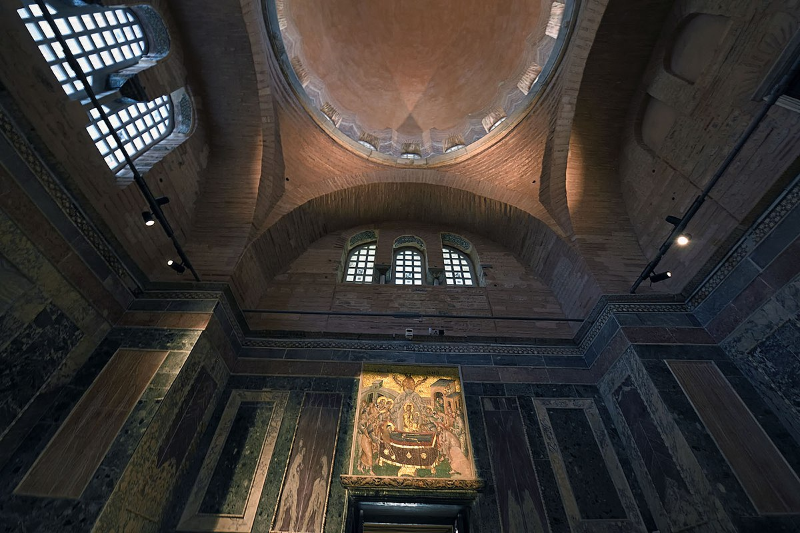

Wikipedia
The Church of the Holy Saviour in Chora (Greek: Ἐκκλησία τοῦ Ἁγίου Σωτῆρος ἐν τῇ Χώρᾳ, Turkish: Kariye Müzesi, Kariye Camii, Kariye Kilisesi) is a medieval Byzantine Greek Orthodox church preserved as the Chora Museum in the Edirnekapı neighborhood of Istanbul.[1] The neighborhood is situated in the western part of the municipality (belediye) of the Fatih district. In the 16th century, during the Ottoman era, the church was converted into a mosque; it became a museum in 1948. The interior of the building is covered with some of the oldest and finest surviving Byzantine mosaics and frescoes; they were uncovered and restored after the building was secularized and turned into a museum.
Photos
 Naos Dormition Position above door

Naos Dormition Position above door

Strolling Through Istanbul
The Church of St. Saviour in Chora, called in Turkish Kariye Camii, is after Haghia Sophia the most interesting Byzantine church in the City; not so much for the building itself, pretty as that is, as because of the superb series of mosaics and frescoes which it preserves and which have been magnificently restored and cleaned by the Byzantine Institute of America1. The name of the church “in Chora” means in the country because the very ancient monastery to which it was attached was outside the Constantinian walls; later when it was included within the Theodosian walls, the name remained (compare St. Martin’s in the Fields or St. Germain des Près) but was given a symbolic sense: Christ as the “country” or “land” of the Living and the Blessed Virgin as the “dwelling-place” of the Uncontainable, as they are referred to in the mosaics in the church.
No trace remains of the original ancient church, nor is anything certain known about its origin. The present building in its first form dates only from the late eleventh century and was built by Maria Doukaina, mother-in-law of the Emperor Alexius I Comnenus, between the years 1077 and 1081; it was probably of the “four-column” type so popular at that time. But it did not last long in its original form; perhaps because of the slipping of the foundations at the east end, the apses appear to have collapsed, and the opportunity was taken to remodel the building. At the east the present wide central apse with its deep barrel-vault was erected; the walls of the nave were retained, but the piers were added in the corners as supports for the arches of a much larger dome; there was a narrow side chapel to the south, traces of which remain in the passages and gallery between the nave and the present, later, side chapel. This elaborate remodelling was apparently carried out by Maria Doukaina’s grandson, the Sebastokrator Isaac Comnenus, third son of Alexius I, early in the twelfth century.
A third period of building activity some 200 years later, after the Latin occupation, gave us the church as it now is. At this time the nave area was left essentially unchanged except for redecoration. But the inner narthex was rebuilt, the outer narthex and the parecclesion or side chapel were added, the small side apses reconstructed, and the northern passage with its gallery was built in its present form. In addition to all these structural alterations, the whole of the present decoration of the church, its marble revetment, its mosaics and its frescoes, is the work of this period, from 1315 to 1321. The man to whom we owe all this was the Grand Logethete Theodore Metochites, whose mosaic portrait we will see over the door from the inner narthex into the nave. The church was converted into a mosque by Atik Ali Paşa in the early sixteenth century. The paintings were never wholly obliterated, though in the course of centuries they were covered with plaster, paint and dirt, and many were shaken down by earthquakes. They have now been brilliantly restored, as far as genuine restoration is possible.